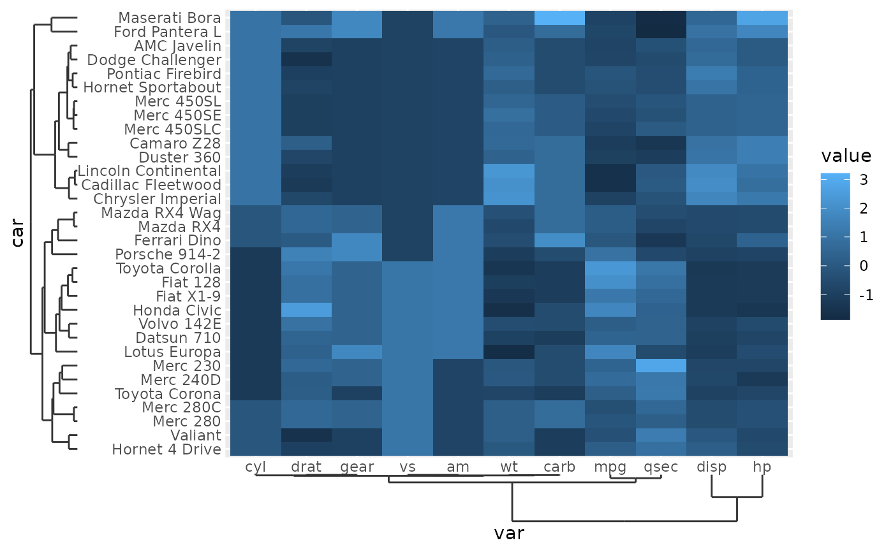
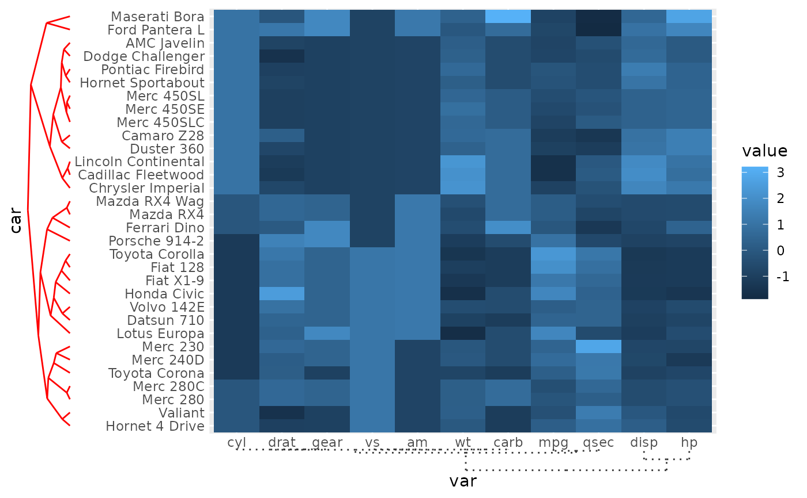

These are speciality scales for use with hierarchically clustered data. The scale automatically orders the limits according to the clustering result and comes with a dendrogram axis.
Arguments
- clust
A data structure that can be coerced to an
<hclust>object throughas.hclust().- ...
Arguments passed on to
ggplot2::discrete_scaleaestheticsThe names of the aesthetics that this scale works with.
paletteA palette function that when called with a single integer argument (the number of levels in the scale) returns the values that they should take (e.g.,
scales::pal_hue()).nameThe name of the scale. Used as the axis or legend title. If
waiver(), the default, the name of the scale is taken from the first mapping used for that aesthetic. IfNULL, the legend title will be omitted.breaksOne of:
labelsOne of:
NULLfor no labelswaiver()for the default labels computed by the transformation objectA character vector giving labels (must be same length as
breaks)An expression vector (must be the same length as breaks). See ?plotmath for details.
A function that takes the breaks as input and returns labels as output. Also accepts rlang lambda function notation.
na.translateUnlike continuous scales, discrete scales can easily show missing values, and do so by default. If you want to remove missing values from a discrete scale, specify
na.translate = FALSE.na.valueIf
na.translate = TRUE, what aesthetic value should the missing values be displayed as? Does not apply to position scales whereNAis always placed at the far right.dropShould unused factor levels be omitted from the scale? The default,
TRUE, uses the levels that appear in the data;FALSEincludes the levels in the factor. Please note that to display every level in a legend, the layer should useshow.legend = TRUE.callThe
callused to construct the scale for reporting messages.superThe super class to use for the constructed scale
- expand
For position scales, a vector of range expansion constants used to add some padding around the data to ensure that they are placed some distance away from the axes. Use the convenience function
expansion()to generate the values for theexpandargument. The defaults are to expand the scale by 5% on each side for continuous variables, and by 0.6 units on each side for discrete variables.- guide
A function used to create a guide or its name. See
guides()for more information.- position
For position scales, The position of the axis.
leftorrightfor y axes,toporbottomfor x axes.
Details
The scale limits are determined by the order and labels in the clust
argument. While limits is not an argument in these scales, the breaks
argument can still be used to selectively omit some breaks and the labels
can be used for formatting purposes.
Examples
# Hierarchically cluster data, separately for rows and columns
car_clust <- hclust(dist(scale(mtcars)), "ave")
var_clust <- hclust(dist(scale(t(mtcars))), "ave")
long_mtcars <- data.frame(
car = rownames(mtcars)[row(mtcars)],
var = colnames(mtcars)[col(mtcars)],
value = as.vector(scale(mtcars))
)
# A standard heatmap adorned with dendrograms
p <- ggplot(long_mtcars, aes(var, car, fill = value)) +
geom_tile() +
scale_x_dendro(var_clust) +
scale_y_dendro(car_clust)
p

# Styling the dendrograms
p +
guides(
y = guide_axis_dendro(key_dendro(type = "triangle")),
x = guide_axis_dendro(space = rel(5))
) +
theme(
axis.text.y.left = element_text(margin = margin(r = 3, l = 3)),
axis.ticks.y = element_line("red"),
axis.ticks.x = element_line(linetype = "dotted")
)

# In polar coordinates, plus some formatting
p +
coord_radial(
theta = "y", inner.radius = 0.5,
start = 0.25 * pi, end = 1.75 * pi
) +
guides(
theta = primitive_labels(angle = 90),
theta.sec = primitive_segments("dendro", vanish = TRUE),
r = guide_axis_dendro(angle = 0)
)